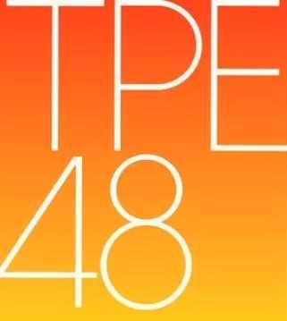

張法法 2001/12/27 台東市
林于馨 2002/01/14 宜蘭縣
本田柚萱 2006/03/15 新竹市
柏 靈 1999/09/13 台北市
王逸嘉 2001/11/18 嘉義市
翁立霏 2000/02/11 新北市
劉曉晴 2000/08/02 香 港
林潔心 2003/03/27 新北市
潘姿怡 1996/07/28 澳 門
李佳俐 2001/11/05 台北市
李采潔 2004/03/15 台北市
冼迪琦 1999/02/13 香 港
藤井麻由 1998/11/30 新北市
劉潔明 1997/04/19 台北市
蔡伊柔 2001/07/15 新北市
小山美玲 2002/06/28 日 本
曾詩羽 1995/02/12 雲林縣
林家瑩 2000/12/04 新北市
李晨熙 2000/07/25 高雄市
李孟純 2002/06/04 屏东县
林易沄 2000/11/21 台北市
高云珏 2001/10/20 台中市
高硯晨 2006/07/16 新北市
陳 琳 2006/01/03 台北市
董子瑄 2003/12/04 台北市
賈宜蓁 1999/08/18 新竹市
劉姸廷 2003/10/13 台北市
蔡亞恩 2000/10/21 基隆市
鄭妤葳 2003/11/11 台南市
鄭佳郁 2004/04/28 台北市
羅瑞婷 2004/08/06 台北市
林 倢 2001/02/14 新竹县
邱品涵 1999/12/24 台北市
阿部マリア 1995/11/29 日 本
國興瑀 2002/10/11 台北市
張羽翎 2003/07/21 花莲市
陳詩雅 1995/04/21 台北市
陳詩媛 1995/04/21 台北市
劉語晴 1996/07/14 桃园市